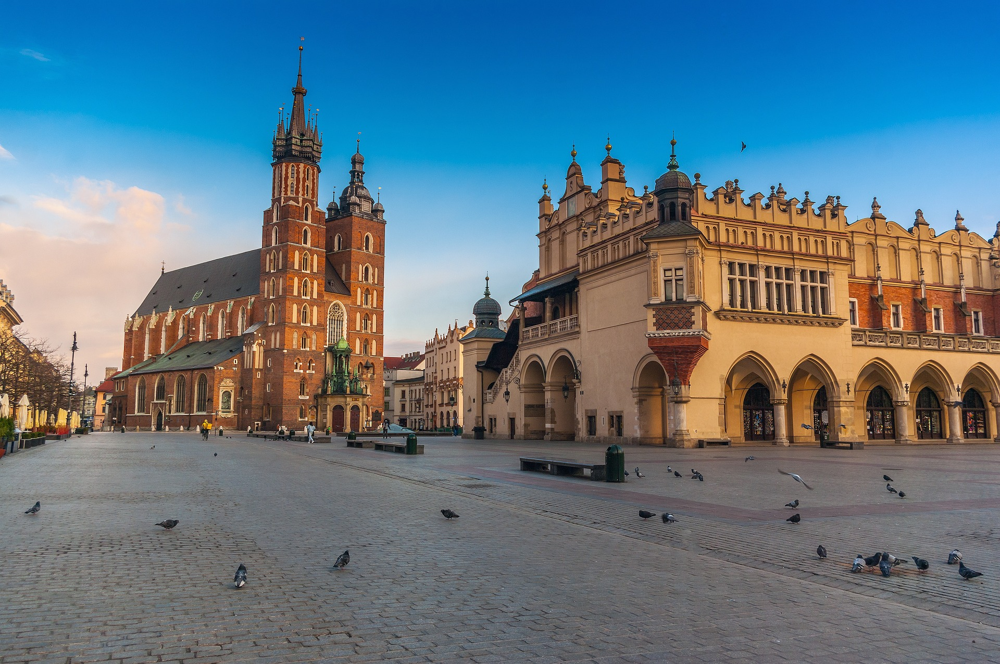
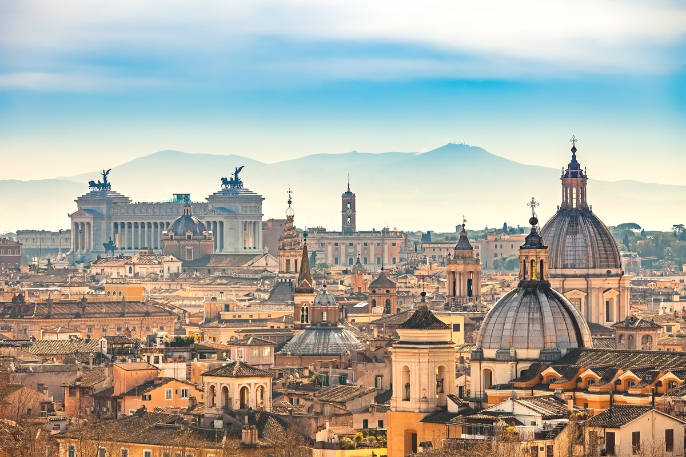

Here are some Places i'd love to visit
Travel is one of the best ways to broaden your horizons, experience new cultures, and create unforgettable memories. Here are some of the top travel destinations I'd love to explore:
1. Rio de Janeiro, Brazil
Rio de Janeiro, known for its stunning beaches, vibrant carnival celebrations, and the iconic Christ the Redeemer statue, is a must-visit destination for anyone looking for a mix of relaxation and adventure. The city's lively culture and beautiful scenery are what draw travelers from all over the world.

2. Dubai, UAE
Dubai is a modern marvel, offering luxurious shopping, futuristic architecture, and thrilling attractions. From the Burj Khalifa to the Palm Jumeirah, Dubai offers an experience like no other. Whether you're enjoying the desert safari or marveling at the indoor ski slopes, there's something for everyone.

3. Tokyo, Japan
Tokyo is a city where tradition meets innovation. Whether you're visiting historic temples, shopping in bustling districts like Shibuya, or enjoying the latest in tech and gaming, Tokyo is a city that never sleeps and always offers something new to explore.

4. Berlin, Germany
Berlin is a city rich in history and modern culture. From the Berlin Wall to the Brandenburg Gate, Berlin has witnessed pivotal moments in history. The city is also a hub for art, music, and nightlife, making it a great destination for those who enjoy both history and the arts.

5. Paris, France
Paris, the city of love, offers iconic landmarks like the Eiffel Tower, the Louvre Museum, and the Notre-Dame Cathedral. It's a city that exudes romance, art, and culture. Whether you're strolling down the Champs-Élysées or enjoying a café along the Seine, Paris is always enchanting.

1. Kraków, Poland
Kraków, one of Poland’s oldest and most charming cities, is known for its historic old town, medieval architecture, and vibrant cultural scene. A UNESCO World Heritage site, it’s home to attractions like the Wawel Castle, St. Mary's Basilica, and the historic Jewish Quarter in Kazimierz.
7. Kuala Lumpur, Malaysia
Kuala Lumpur is a vibrant city that combines modern skyscrapers like the Petronas Towers with cultural landmarks like Batu Caves. The city is a melting pot of cultures, offering incredible food, shopping, and history, making it a perfect destination for both relaxation and exploration.

8. Rome, Italy
Rome is a city that feels like a living museum, where ancient ruins coexist with modern culture. The Colosseum, Roman Forum, and Vatican City are just a few of the incredible historical sites to explore. In addition to its history, Rome is a great place for delicious food and vibrant nightlife.
9. Barcelona, Spain
Barcelona, known for its unique architecture by Antoni Gaudí, including the Sagrada Família and Park Güell, is a vibrant city by the sea. From its bustling La Rambla to the beautiful beaches of Barceloneta, Barcelona offers both cultural richness and a relaxed coastal vibe.

2. Las Vegas, USA
Las Vegas is known worldwide for its nightlife centered around 24-hour casinos and other entertainment options. It's a city that never sleeps, offering an electrifying mix of hotels, world-class dining, shopping, and famous landmarks like the Las Vegas Strip and Bellagio fountains.